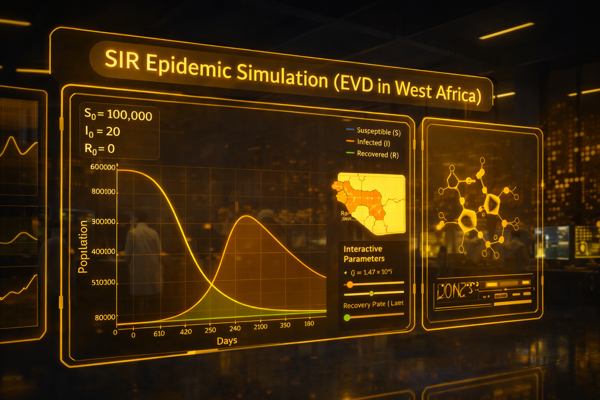

"Shayan stood out for his creativity, cross-disciplinary thinking, and valuable contributions to the model's global sensitivity analysis."
 Bioinformatics · Systems Biology · ML
Bioinformatics · Systems Biology · ML
Turning biological data
into insight.
I work across transcriptomics, systems biology, and mathematical modeling — building reproducible analyses and clean visualizations in R, Python, and Julia.
01 — About
Who I am
I am a computational biologist working at the intersection of bioinformatics, biotechnology, and quantitative biology. I develop reproducible computational pipelines, analyze complex biological datasets, and apply statistical, machine learning, and modeling approaches to study biological systems. My interests include multi-omics data analysis, biomarker discovery, systems biology, and computational methods for advancing biomedical research and biotechnology applications.
02 — Gallery
Photos
03 — Testimonials
What colleagues say
"When working with student communities, you quickly notice who truly wants to learn. Shayan is a wonderful example of that group: dedicated, growth-driven, and eager to enrich any team he joins."
"Shayan ranks among the top students I have supervised, combining technical skill, intellectual curiosity, and strong scientific communication."
"Shayan combines strong scientific intuition with precise and reliable work, with an impressive ability to connect laboratory insight and computational analysis."
04 — Projects
Selected work

Mathematical Modelling of Nurse Macrophage-Driven Erythropoiesis Disruption in AML
ODE-based modeling and global sensitivity analysis of AML-driven disruption of erythropoiesis, with biologically grounded hypothesis generation.


SIR Epidemic Simulation (EVD in West Africa)
Julia-based Ebola simulation with the SIR model, interactive parameter tuning, realistic epidemic curves, and optional GIF animation.


Single-cell RNA-seq Pipelines
scRNA-seq preprocessing, clustering, and differential expression with Seurat/Scanpy; pathway enrichment and network analysis.

05 — Publications
Scholarly Outputs
Remodeling of nurse macrophages and erythroblastic islands contributes to the loss of bone marrow erythropoiesis in acute myeloid leukemia
Manuscript under review (anticipated 2025–2026)
From tumor pathways to blood signature: A machine-learning-validated 5-miRNA signature for the early detection of gastric cancer
Preprints.org · Under review
View Preprint →Peritoneal metastasis prediction in gastric cancer: A machine learning approach
medRxiv · Under review
View Preprint →Investigating the use of nanobodies and biotechnology methods in cancer treatment
1st International Congress of Cancer Genomics, Tehran, Iran, May 3–5 2023
View Publication →06 — Illustrations
Scientific Illustrations
Figures and graphical abstracts designed for research papers and presentations.